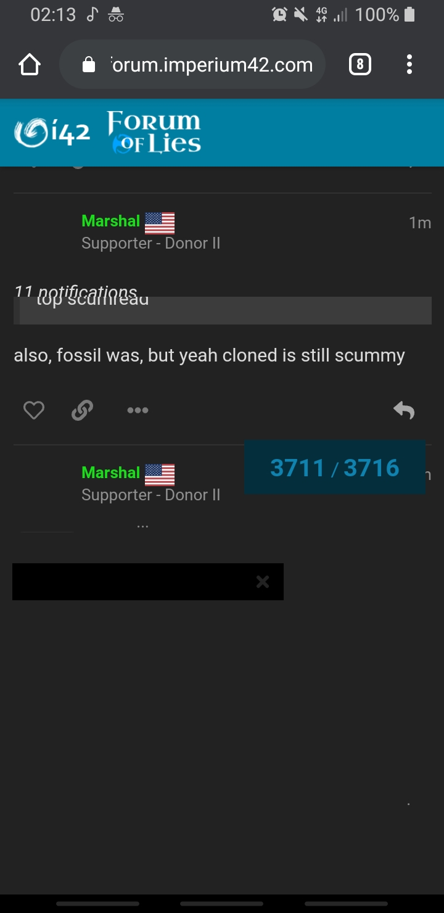

Alright i have seen enough for today.
/unvote
/vote clonedcheese
Regardless what Alice’s alignment is, i don’t see a world with cheese ever flipping Town. I’m going to be bed so yeah best regards and see you guys D2.
Should be a bit more than that. It started at 12:30 AM for me, and it’s about 5:10 here now.
its enough to thrown you into the PoE at least
hi eod is at this time
Again, I do apologize for my anger issues.
Here’s the thing, I actually have a decent basis behind my theories here as your behavior looks to be distance-y with cloned and I’ve actually been pushing cloned here. You just claimed “Oh, cloned’s scum, but I’m not gonna bother pushing him. Also the player pushing him could be a wolf bussing, BTW.”
Our situations are apples and oranges.
I know I’m going to be scumread for this post, but it needs to be said.
On one hand, I feel as though it’s Cloned definitely. There’s no way Alice is suspicious, or even if she is, it‘ll be obvious before long. Alice claimed ti, there were no counterclaims.
On the other hand, last game I played I thought it was one player who was evil, the other definitely not evil. We was wrong, and it cost town the game.
Alice is definitely an advanced player enough to convince town of her good alignment, at least for a few days. No ti counter claimed, but there can be a reason for that; not wanting to be outed. For all we know, one of the people pushing Alice are ti but aren’t explaining, and that’s why they look so suspicious.
Anyway, I’m keeping an open mind, and I hope players aren’t going to yell at me for not just sheeping along and voting whoever the ‘good players’ are voting. Because this is a social deduction.
True, true. Though I’ve been appearing whenever someone summons me and I’ve also been trying to get caught up. Just…I’ve had a busy weekend. As I said before, though, I’ll be reading through the thread soon enough. I just need to finish my class first.
1 Like
My assumption + shade: EVO used you as cheap argument to attack Alice since you are one of the players who have talked the least.
There are currently more or less 2 factions; those who want Alice dead and those who want cheese dead. EVO belongs to the anti-Alice faction, and I’m recruiting you to the pro-Alice faction.
anyway imma be real, i see people yelling at eachother in all caps and i don’t care to read it
as such imma just come back later and catch up because these bad vibes don’t mesh well with me rn
1 Like
I think you’re just transferring those issues to me
There was no “bad” play by Marshal.
i could have, but you got caught in a fakeclaim and got my attention more than my other reads.
This…this is good. This almost set me off again. You are good at provoking. You know the exact things that rub me the wrong way. I will not comment on this anything other than this is a very subjective statement.
do what you can and you can play more hope its enough to get out of PoE i guess
11 notifications
2 Likes
also, fossil was, but yeah cloned is still scummy
I’m fine with that. Alice was quite productive in your game. Though I’m wanting to read through the thread before I completely commit.
Also again; WTF is with the UI glitch? I’m currently on mobile, but the UI literally glitches every now and then.
do not start this

There were no ti ccs that I care to talk about.
Well it seems cheese is the consensus lynch for today. I’m all for it seeing socially he isn’t town.